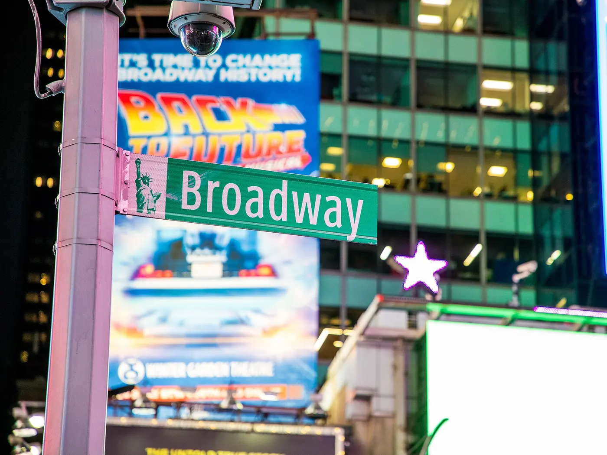

Grand Central Terminal, beyond the photograph
Grand Central is a working commuter terminal, a Beaux-Arts landmark and free to walk into. Most visitors take the ceiling photograph and leave; an hour spent properly is one of the best-value experiences in Midtown.
Checked 2 November 2026. Prices, opening hours and transport details were verified against official sources. Things change — confirm before you book. How we check.

A cathedral built for commuters
The main concourse is the reason people come, and the ceiling is the reason they look up: an astronomical mural painted over a space designed to move thousands of people an hour without them noticing each other.
Walk in from 42nd Street, stand in the middle and look up. Then find the Whispering Gallery under the arch by the Oyster Bar, where a whisper in one corner carries to the opposite corner. The information booth clock in the centre is the meeting point every New Yorker uses.
The terminal is free to enter and open from early morning to late night. The dining concourse below has food from many counters, and the Metro-North ticket machines are on the lower level, which is useful if you are heading to the Hudson Valley or Connecticut. It is a short walk from Top of the Rock and directly below SUMMIT One Vanderbilt, so it slots easily into a Midtown day.
Three reasons to spend an hour here rather than pass through
The room, the acoustics and the price.
The ceiling is worth the detour
The astronomical mural and the tall windows at either end make the concourse one of the great rooms of the city. It costs nothing to stand in it.
The Whispering Gallery
Under the low arch by the Oyster Bar, the acoustics carry a whisper from one corner to the other. It works best when the terminal is quiet.
An easy free hour in Midtown
It is free, central and open late, which makes it the ideal filler between two booked attractions or a shelter from the rain.
How to visit Grand Central
The concourse needs no ticket. The only thing worth booking is the official tour, which runs for about an hour and is best done in the morning.
- Walk in through the main doors on 42nd Street at Park Avenue, or come up from the subway straight into the concourse.
- Check the official site for current opening hours before a late-night or early-morning visit; the terminal effectively runs from 5.15am to 2am.
- Book the official Grand Central Tour online if you want the history explained and access to parts of the building. It runs 60 to 75 minutes and is from around $35; check the current price and schedule on the official site.
- Visit the Whispering Gallery under the arch by the Oyster Bar and try the acoustic trick corner to corner.
- Avoid 5pm to 6.30pm on a weekday if you want photographs of the concourse without commuters in every frame.
The terminal's official site
The concourse is free to enter. The official site lists opening hours, the paid Grand Central Tour and what is happening in Vanderbilt Hall. Use it rather than a third-party tour seller.
Plan your visitOfficial terminal site. The building is free; the tour is a paid extra.
What most visitors get wrong
-
01
Come before 8am for photographs
The concourse is at its calmest early on a weekday. By 9am the commuter tide is in and clear shots of the room are difficult.
-
02
Find the Whispering Gallery
It is the low arch by the Oyster Bar on the lower level. Stand in one corner and speak towards the wall; someone in the opposite corner hears you clearly.
-
03
Skip the rush hour
Weekdays from 5pm to 6.30pm are the busiest. If you are only passing through that is fine, but if you want the room to yourself, come later.
-
04
The Oyster Bar is closed on Sundays
The famous Oyster Bar does not open on Sundays. The dining concourse has other counters, but check times before you rely on it for a meal.

Nearby and worth your time

Top of the Rock
The deck with the Empire State in view. Pair it with an early Grand Central visit.

SUMMIT One Vanderbilt
The mirror-and-glass deck directly above the terminal, with timed entry.

Free things to do in NYC
Grand Central is one of the best free interiors in the city; here are the others.
Questions people ask
Is Grand Central Terminal free to visit?
Yes. The concourse and the public areas of the terminal are free to enter. The official Grand Central Tour is a paid extra, and the shops and restaurants are normal businesses.
What are the opening hours?
The terminal runs from about 5.15am to 2am daily. Check the official site for current hours before an early-morning or late-night visit, since access can change with maintenance and events.
Is the Whispering Gallery real?
Yes. The acoustics under the low arch by the Oyster Bar carry a whisper from one corner to the opposite one. It works best when the terminal is relatively quiet.
Are there tours of Grand Central?
There is an official Grand Central Tour of about 60 to 75 minutes, from around $35, booked online. A self-guided audio tour also exists; check the official site for its current price and schedule.
When is the quietest time to visit?
Before 8am on a weekday is the calmest, with the best light through the windows. Avoid 5pm to 6.30pm, when the commuter rush fills the concourse.